Unidade 8
Circunferência
216

Grande Colisor de Hádrons - Large Hadron Collider (LHC). Organização Europeia para a Pesquisa Nuclear (CERN). Genebra, Suíça, 2011.
217
Conheça a maior máquina já construída
A maior máquina já construída na história está enterrada sob a fronteira da Suíça com a França. O Large Hadron Collider (LHC) — Grande Colisor de Hádrons, em português, é o maior acelerador de partículas existente no mundo.
Composto por um túnel circular de 27 km de circunferência, o LHC acelera prótons (partículas no núcleo de átomos) a altíssimas velocidades fazendo-os colidir entre si. Essas colisões produzem diversos outros tipos de partículas, permitindo aos físicos investigar o que compõe a matéria e a energia no nível mais elementar.
converse
1. O comprimento da circunferência do Grande Colisor de Hádrons é 27 km. Como podemos calcular a medida do diâmetro desta circunferência?
2. Considerando-se 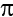 = 3,14, qual é a medida aproximada do diâmetro da circunferência e do raio do Grande Colisor de Hádrons?
218
Ângulos na circunferência
Você já ouviu falar no quadrante náutico?
Quadrante náutico do séc. XVII. Acervo do Museu da Marinha de Lisboa.
O quadrante náutico, possui algumas variações em seu formato como no quadrante inglês, no quadrante marinho ou ainda quadrante de Gunter. É um antigo instrumento náutico utilizado na época das Grandes Navegações, em geral pelos portugueses, e que calculava a distância entre a origem e o lugar onde a embarcação se encontrava com base na altura da estrela polar. O quadrante náutico é um instrumento bastante simples, consiste em um quarto de círculo com duas pínulas de pontaria (espécie de mira) perfuradas em um dos seus lados retos, um fio de prumo fixo ao centro do arco e uma escala de graduação de 0° a 90° inscrita na sua borda.
O quadrante tinha como função medir a altura dos astros para calcular a latitude que indicava a posição da embarcação no mar.
A frota de Cabral saindo do Tejo, Idealização do pintor português Roque Gameiro, reproduzido da "História da Colonização Portuguesa no Brasil". Revista Maritma Brazileira de 1928. Ano 1928\Edição 00111
219
Ângulo central
O ângulo que tem como vértice o centro da circunferência denomina-se ângulo central.
Observe o arco da circunferência a seguir.
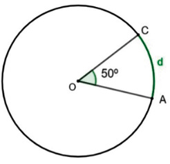
Dessa forma, temos que:
Ângulo inscrito
O ângulo que possui como vértice um ponto pertencente à circunferência e os lados secantes a ela denomina-se ângulo inscrito.
A medida do ângulo inscrito em uma circunferência é igual à metade da medida do arco correspondente, ou seja, é igual à metade da medida do ângulo central.
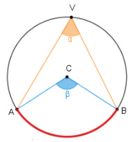
Ângulo central
O ângulo que tem como vértice o centro da circunferência denomina-se ângulo central.
Observe o arco da circunferência a seguir.
Dessa forma, temos que:
Ângulo inscrito
O ângulo que possui como vértice um ponto pertencente à circunferência e os lados secantes a ela denomina-se ângulo inscrito.
A medida do ângulo inscrito em uma circunferência é igual à metade da medida do arco correspondente, ou seja, é igual à metade da medida do ângulo central.
Ângulo inscrito
220
Vamos verificar a propriedade de um ângulo inscrito por meio do software GeoGebra. Para esse estudo, vamos utilizar a versão disponível em: https://www.geogebra.org/classic.
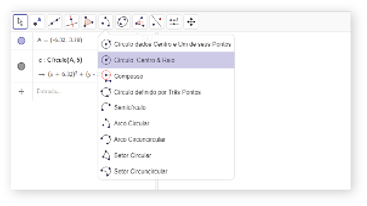
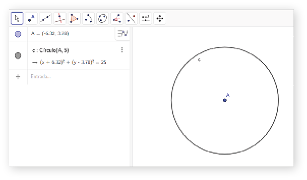
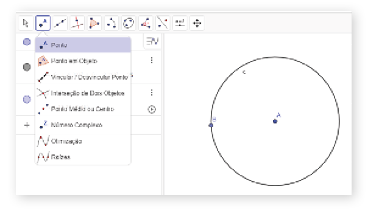
221
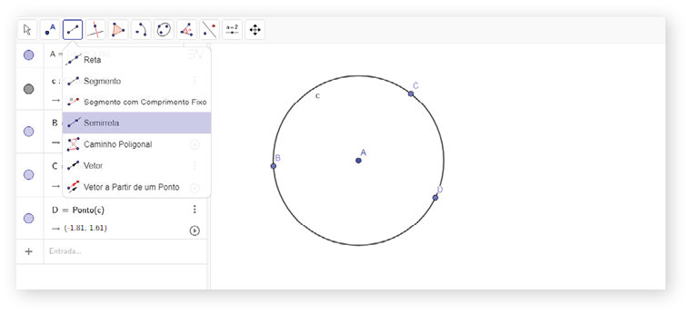
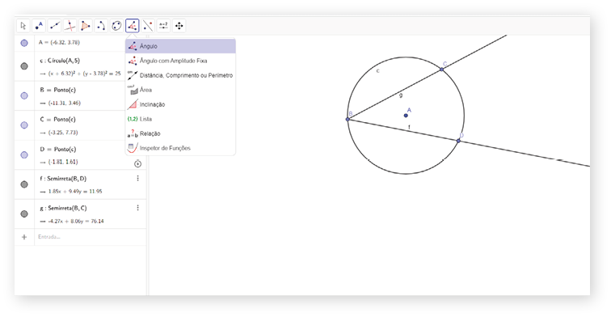
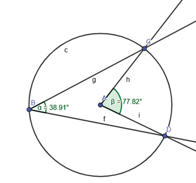
Em nosso exemplo, temos que:
α = 38,91° e β = 77,82°, ou seja, β = 2α.
222
Outras relações entre ângulos e circunferências
- Ângulo excêntrico externo – ângulo com vértice exterior à circunferência.
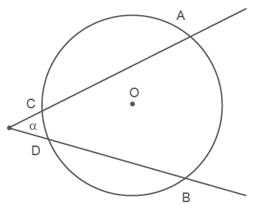
Temos nesse caso um ângulo α que equivale à metade da diferença entre as medidas dos arcos formados pelos seus lados, ou seja:
- Ângulo excêntrico interno – ângulo com vértice no interior da circunferência.
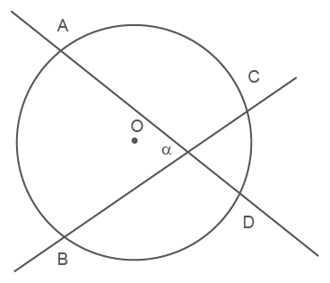
Temos nesse caso um ângulo excêntrico interno que possui medida igual à metade da soma dos arcos formados pelos seus lados, ou seja:
223
Encontre soluções
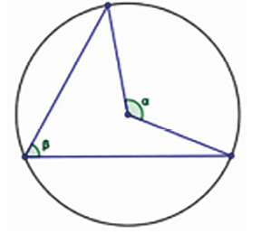
|
Ângulo inscrito |
Ângulo central |
|
28° |
|
|
100° |
|
|
79° |
|
|
126° |
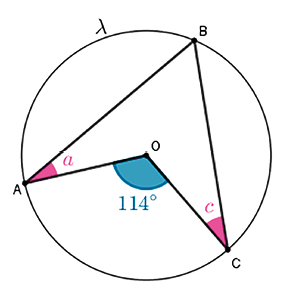